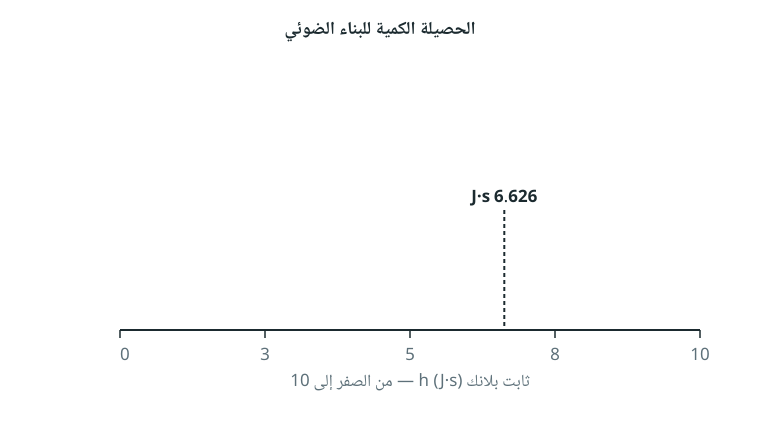

الحصيلة الكمية للبناء الضوئي
Quantum yield of photosynthesis
الحصيلة الكمية للبناء الضوئي هي عدد جزيئات الأكسجين المنطلقة أو ثاني أكسيد الكربون المثبَّت لكل فوتون ممتص، وحدّها النظري 0.125 جزيء أكسجين لكل فوتون لأن إنتاج جزيء واحد يحتاج ثمانية فوتونات.
الحصيلة الكمية للبناء الضوئي تقيس كفاءة تحويل الطاقة الضوئية إلى طاقة كيميائية: كم جزيء أكسجين يُطلق أو كم جزيء CO₂ يُثبَّت مقابل كل فوتون يمتصه اليخضور. ولأن تفكيك جزيء ماء واحد يحتاج أربعة إلكترونات، وكل إلكترون يحتاج فوتونين في سلسلة نقل الإلكترون، فإن إنتاج جزيء أكسجين واحد (من ماءين) يحتاج ثمانية فوتونات. فالحصيلة النظرية القصوى 1/8 = 0.125 جزيء O₂ لكل فوتون. والحصيلة الفعلية أقل بسبب فقد الطاقة في النقل والفوتونات غير الممتصة فعلياً. مثال: نبات بحصيلة 0.09 يطلق 0.09 جزيء أكسجين لكل فوتون ممتص، أي 72% من الحد النظري.
كيف تعمل الظاهرة؟
البناء الضوئي يبدأ بامتصاص اليخضور للفوتونات في النظامين الضوئيين الأول والثاني. وكل فوتون ممتص يحرّك إلكتروناً في سلسلة نقل الإلكترون، فتنتقل الإلكترونات من الماء إلى NADP⁺. ولأن جزيء الأكسجين ينتج من تفكيك جزيئي ماء، وكل جزيء ماء يعطي إلكترونين، فإنتاج جزيء أكسجين واحد يحتاج أربعة إلكترونات. ولأن كل إلكترون يحتاج فوتونين — واحداً في كل نظام ضوئي — فالمجموع ثمانية فوتونات. هذا هو أصل الرقم 8، وهو حدّ لا يمكن تجاوزه في البناء الضوئي الأكسجيني لأنه محكوم ببنية السلسلة نفسها لا بكفاءة الإنزيمات.
العلاقة بالأرقام
Φ = n(O₂)/n(photons) ≤ 1/8 = 0.125. والطاقة المخزّنة لكل جزيء O₂ نحو 470 kJ/mol (بما يوافق 8 فوتونات عند 680 nm: 8 × 176 kJ/mol = 1 408 kJ/mol طاقة ساقطة، والكفاءة 470/1408 = 33%). مثال عددي: 850 µmol فوتون/(m²·s) ممتصة، Φ = 0.090 → 76.5 µmol O₂/(m²·s). والطاقة الساقطة عند 680 nm: 850×10⁻⁶ × 6.022×10²³ × 2.922×10⁻¹⁹ = 149.6 W/m². والمخزّنة: 76.5×10⁻⁶ × 470 000 = 0.0360 W/m². والكفاءة الكلية 0.0360/149.6 = 0.024%.
مفاهيم متقاربة
يُفرَّق بين الحصيلة الكمية والحصيلة الضوئية للفلورة: الأولى إنتاج أكسجين لكل فوتون، والثانية فوتونات فلورة لكل فوتون ممتص، وهي مقياس إجهاد. ويُفرَّق بين الحصيلة الكمية والكفاءة الطيفية: الثانية تعتمد على الطول الموجي لأن اليخضور يمتص الأزرق والأحمر أكثر من الأخضر. ويُفرَّق بين البناء الضوئي الأكسجيني وغيره: البكتيريا الكبريتية تستعمل كبريتيد الهيدروجين ولا تنتج أكسجين، فحصيلتها تُحسب بمرجع آخر. وأخيراً يُفرَّق بين الحصيلة الظاهرية والحقيقية: الظاهرية تُقاس بتبادل الغاز الصافي وتشمل التنفس، والحقيقية تُقاس بالفلورة أو الأكسجين الموسوم.
حدود التطبيق
الحدّ 1/8 صالح للبناء الضوئي الأكسجيني في ظروف مثالية بلا تنفس ولا إضاءة زائدة. وفي الإضاءة العالية تنخفض الحصيلة بسبب الإشباع وحماية النظام الضوئي من التلف، وفي الإضاءة المنخفضة تنخفض بسبب التنفس. ولا تصح الحصيلة المقيسة بتبادل الغاز الصافي كحصيلة حقيقية، لأن التنفس يستهلك جزءاً من الأكسجين المنتج. وأخيراً لا تُقارن حصائل أنواع مختلفة بلا توحيد الطول الموجي وظروف القياس، لأن امتصاص اليخضور يختلف اختلافاً كبيراً بالطول الموجي.

| الكمية | القيمة | المصدر |
|---|---|---|
| ثابت بلانك h | 6.626 070 15×10⁻³⁴ J·s | [1] |
| الحدّ النظري للحصيلة الكمية | 0.125 mol O₂/mol photon | [3] |
المصادر
- 1 CODATA Value: Planck constant — NIST — CODATA 2022 recommended values (2024). physics.nist.gov/cgi-bin/cuu/Value?h · اطُّلع عليه 2026-11-21
- 2 CODATA Value: speed of light in vacuum — NIST — CODATA 2022 recommended values (2024). physics.nist.gov/cgi-bin/cuu/Value?c · اطُّلع عليه 2026-11-21
- 3 CODATA Value: Avogadro constant — NIST — CODATA 2022 recommended values (2024). physics.nist.gov/cgi-bin/cuu/Value?na · اطُّلع عليه 2026-11-21
استشهد بهذا المصطلح
الصيغتان مبنيتان من بيانات الصفحة نفسها: العنوان والتاريخ ورابط النسخة المنشورة.
الحصيلة الكمية للبناء الضوئي — Quantum yield of photosynthesis. (2026). ديوان المعرفة — انفراد. https://infiradev.com/diwan/terms/term-quantum-yield-photosynthesis.html
@misc{term-quantum-yield-photosynthesis2026,
title = {الحصيلة الكمية للبناء الضوئي},
titleaddon = {Quantum yield of photosynthesis},
howpublished = {{ديوان المعرفة — انفراد} — مرجع علمي عربي},
year = {2026},
url = {https://infiradev.com/diwan/terms/term-quantum-yield-photosynthesis.html},
urldate = {2026-11-26},
note = {مراجعة علمية: hermes (مراجعة معتمدة 2026-11-26)}
}
راجعه: hermes (مراجعة معتمدة 2026-11-26) · 2026-11-26 · آخر تحديث 2026-11-21